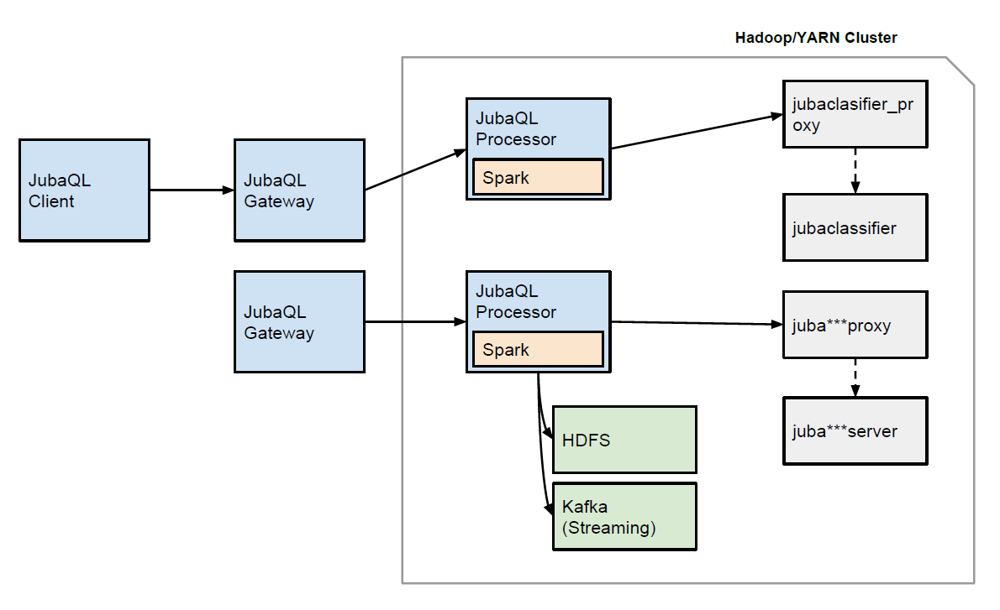

JubaQLアーキテクチャ¶
JubaQLを構成するコンポーネントとして、Client、Gateway、Processor、Jubatusと、Hadoop YARN(Yet Another Resource Negotiator)、HDFSがあります。 YARNを除外した、JubaQLの概略は下の図のようになります。

{kind=link}
JubaQLのアーキテクチャ
ユーザがJubaQLのクエリを実行するのに利用するプログラムがClientです。 ClientがやりとりするのはGatewayというコンポーネントであり、Gatewayはユーザのセッション単位でJubaQL・Jubatusのシステムを独立して利用できるインタフェースを提供します。 その後ろでは、JubaQLを処理するProcessorはSparkアプリケーションとして動作し、HDFSと連携します。 また、JubatusのプロセスがYARNによって割り当て可能なマシンにスケジュールされます。
- Client
- Gatewayへ接続してログイン（ユーザ認証はまだ実装されていない）してセッションIDを取得し、セッションIDごとに他のClientとは分離されたJubaQL環境でクエリを実行します。 JubaQLを実行するための実行環境（シェル）であり、JubaQLのクエリの実行・結果の表示とセッションの終了処理が実装されています。 ClientとGateway間の接続にはHTTPを利用しています。 Jubatusのクライアントライブラリと異なり、ClientはJubatusのRPCを呼び出すものではありません。
- Gateway
Gatewayはクライアントごとにセッションを作成し、セッションに対応するProcessorを起動します。 セッションごとにProcessorを起動することで、各セッションで独立したJubaQLの実行環境の提供が可能になります。 それにより、異なるユーザが同時に独立したJubaQL環境を利用することが可能になります。
ProcessorはSparkのアプリケーションとしてGatewayから実行します。
- Processor
- JubaQLのクエリを受け取り、クエリを処理したり、Jubatusのプロセスを起ち上げるのがProcessorです。 GatewayがセッションごとにProcessorを起動するように、ProcessorではJubatusのプロセス制御をします。 Sparkを使ってHDFSやKafkaを入力源として扱い、JubaQLのクエリにあわせてJubatusの命令を呼び出します。
{kind=link}